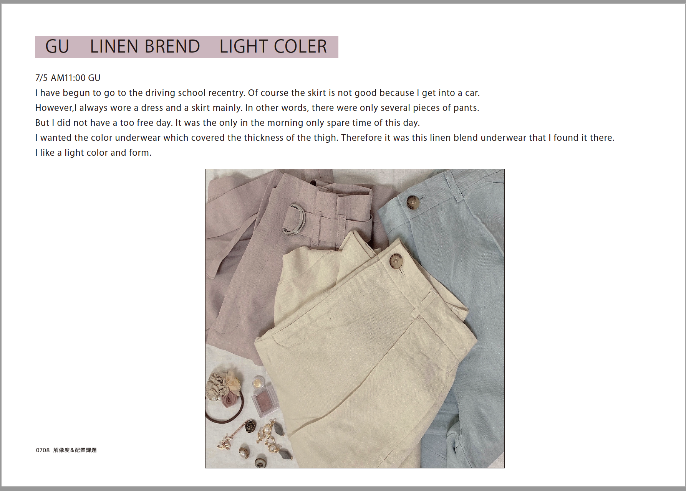

Crowdworks
Session:1
課題：illustraterで看板を作成する
Adobe illustrationで珈琲屋さんの看板を作りました。
コンペで練習中です。
リーディングスキル
Session:1
チラシ作る！
イタリアン料理を紹介するチラシを作りました。
結構、事前学習物と事後学習物でパワポ→Adobeイラレになったから成長したと思う。
えらい！私。比較見て欲しい。ぜひ。
これがAdobeで作った方。
Session:2
クロスについて書いたもの

メディアリテラシー基礎
Session:1
なんか洒落てるものを作る！
Adobeを使い回しました。イラレとフォトショ。
実は英語はgoogle翻訳だから多分おかしい場所がある。
けど、気にしない。

Session:2
HTMLさわり始めた。
なんかふと思いついたのがマイメロだったので地雷系にしました。
プランニング基礎
Session:1
初めてのお散歩授業
写真４枚で驚くようにしてください、は意味わからんくて萎えてた。
授業中に全力チャリしたのは初めてで背徳的感情を味わえた。
ちなみに家の近くの神社に行った。めっちゃおじさんに不思議な顔された。
Session:2
サプライズパーティ
暗号作るの楽しかった！解けますか？名前がヒント。
田を抜いて。
一つ後ろに。
英文とか考えて。
縦に読んで。
キーボードをよく見て。
オレンジアンドパートナーズの皆様ありがとうございました。